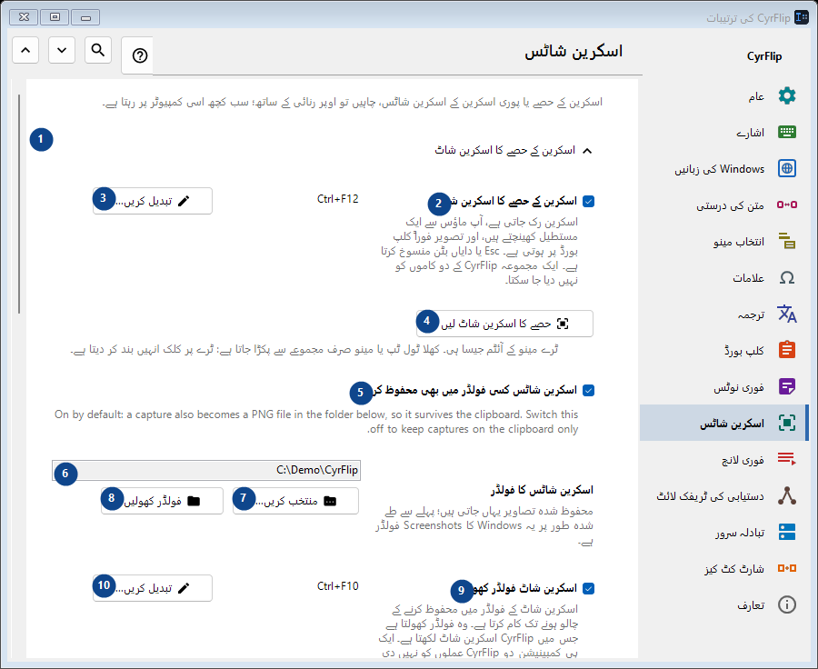
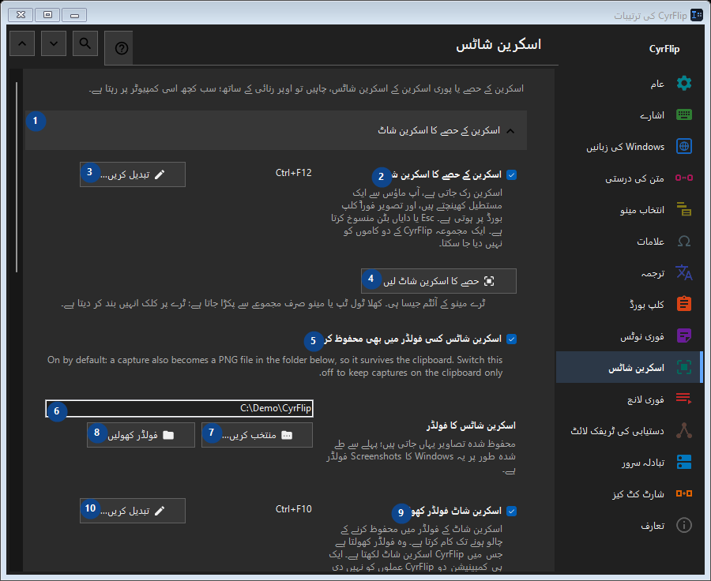

اسکرین شاٹس
مقصد
اسکرین کے حصے یا پوری اسکرین کے اسکرین شاٹس، چاہیں تو اوپر رنائی کے ساتھ؛ سب کچھ اسی کمپیوٹر پر رہتا ہے۔


استعمال کی ترتیب
ترتیبات فوراً لاگو ہوتی ہیں۔ کوئی لازمی ترتیب نہیں؛ نیچے کے گروپ استعمال کریں۔
عناصر
1. اسکرین کے حصے کا اسکرین شاٹ
درج شدہ کارروائی کے لیے یہ حکم استعمال کریں۔ قبول کرنے سے پہلے تصدیق پڑھیں۔
آپ کے شارٹ کٹ2. اسکرین کے حصے کا اسکرین شاٹ
اسکرین رک جاتی ہے، آپ ماؤس سے ایک مستطیل کھینچتے ہیں، اور تصویر فوراً کلپ بورڈ پر ہوتی ہے۔ Esc یا دایاں بٹن منسوخ کرتا ہے۔ ایک مجموعہ CyrFlip کے دو کاموں کو نہیں دیا جا سکتا۔
آپ کے شارٹ کٹ3. تبدیل کریں - اسکرین کے حصے کا اسکرین شاٹ
درج شدہ کارروائی کے لیے یہ حکم استعمال کریں۔ قبول کرنے سے پہلے تصدیق پڑھیں۔
آپ کے شارٹ کٹ4. حصے کا اسکرین شاٹ لیں
ٹرے مینو کے آئٹم جیسا ہی۔ کھلا ٹول ٹپ یا مینو صرف مجموعے سے پکڑا جاتا ہے: ٹرے پر کلک انہیں بند کر دیتا ہے۔
آپ کے شارٹ کٹ5. اسکرین شاٹس کسی فولڈر میں بھی محفوظ کریں
On by default: a capture also becomes a PNG file in the folder below, so it survives the clipboard. Switch this off to keep captures on the clipboard only.
آپ کے شارٹ کٹ6. اسکرین شاٹس کا فولڈر
ساتھ کے لیبل کے مطابق قدر منتخب یا درج کریں۔ آگے بڑھنے سے پہلے جانچیں۔
آپ کے شارٹ کٹ7. منتخب کریں - اسکرین شاٹس کا فولڈر
درج شدہ کارروائی کے لیے یہ حکم استعمال کریں۔ قبول کرنے سے پہلے تصدیق پڑھیں۔
آپ کے شارٹ کٹ8. فولڈر کھولیں - اسکرین شاٹس کا فولڈر
درج شدہ کارروائی کے لیے یہ حکم استعمال کریں۔ قبول کرنے سے پہلے تصدیق پڑھیں۔
آپ کے شارٹ کٹ9. اسکرین شاٹ فولڈر کھولیں
اسکرین شاٹ کے فولڈر میں محفوظ کرنے کے چالو ہونے تک کام کرتا ہے۔ وہ فولڈر کھولتا ہے جس میں CyrFlip اسکرین شاٹ لکھتا ہے۔ ایک ہی کمبینیشن دو CyrFlip عملوں کو نہیں دی جا سکتی۔
آپ کے شارٹ کٹ10. تبدیل کریں - اسکرین شاٹ فولڈر کھولیں
درج شدہ کارروائی کے لیے یہ حکم استعمال کریں۔ قبول کرنے سے پہلے تصدیق پڑھیں۔
آپ کے شارٹ کٹ11. پوری اسکرین کا اسکرین شاٹ
درج شدہ کارروائی کے لیے یہ حکم استعمال کریں۔ قبول کرنے سے پہلے تصدیق پڑھیں۔
آپ کے شارٹ کٹ12. پوری اسکرین کا اسکرین شاٹ
ایک دباؤ: تمام ڈسپلے ایک تصویر کے طور پر گرفتار ہوکر سیدھے کلپ بورڈ پر چلے جاتے ہیں۔ اسکرین پر کچھ بھی منجمد نہیں ہوتا۔
آپ کے شارٹ کٹ13. تبدیل کریں - پوری اسکرین کا اسکرین شاٹ
درج شدہ کارروائی کے لیے یہ حکم استعمال کریں۔ قبول کرنے سے پہلے تصدیق پڑھیں۔
آپ کے شارٹ کٹ14. پوری اسکرین کا اسکرین شاٹ لیں
ٹرے مینو کے آئٹم "پوری اسکرین کا اسکرین شاٹ" جیسا ہی۔
آپ کے شارٹ کٹ15. اسکرین شاٹس پر رنائی کریں
درج شدہ کارروائی کے لیے یہ حکم استعمال کریں۔ قبول کرنے سے پہلے تصدیق پڑھیں۔
آپ کے شارٹ کٹ16. اسکرین شاٹس پر رنائی کریں
اسکرین شاٹ کے بعد منجمد تصویر اسکرین پر رہتی ہے - اس پر بیضوی، مستطیل، لکیریں اور تیر بنائیں۔
آپ کے شارٹ کٹ17. رنائی کے ساتھ حصے کا اسکرین شاٹ
Capture a selected region and draw on it. One chord cannot belong to two CyrFlip actions.
آپ کے شارٹ کٹ18. تبدیل کریں - رنائی کے ساتھ حصے کا اسکرین شاٹ
درج شدہ کارروائی کے لیے یہ حکم استعمال کریں۔ قبول کرنے سے پہلے تصدیق پڑھیں۔
آپ کے شارٹ کٹ19. رنائی کے ساتھ پوری اسکرین کا اسکرین شاٹ
Capture every display as one picture and draw on it. One chord cannot belong to two CyrFlip actions.
آپ کے شارٹ کٹ20. تبدیل کریں - رنائی کے ساتھ پوری اسکرین کا اسکرین شاٹ
درج شدہ کارروائی کے لیے یہ حکم استعمال کریں۔ قبول کرنے سے پہلے تصدیق پڑھیں۔
آپ کے شارٹ کٹ21. حصے کا اسکرین شاٹ لیں اور رنائی کریں
"رنائی کے ساتھ حصے کا اسکرین شاٹ" مجموعے جیسا ہی۔
آپ کے شارٹ کٹ22. پوری اسکرین کا اسکرین شاٹ لیں اور رنائی کریں
"رنائی کے ساتھ پوری اسکرین کا اسکرین شاٹ" مجموعے جیسا ہی۔
آپ کے شارٹ کٹ